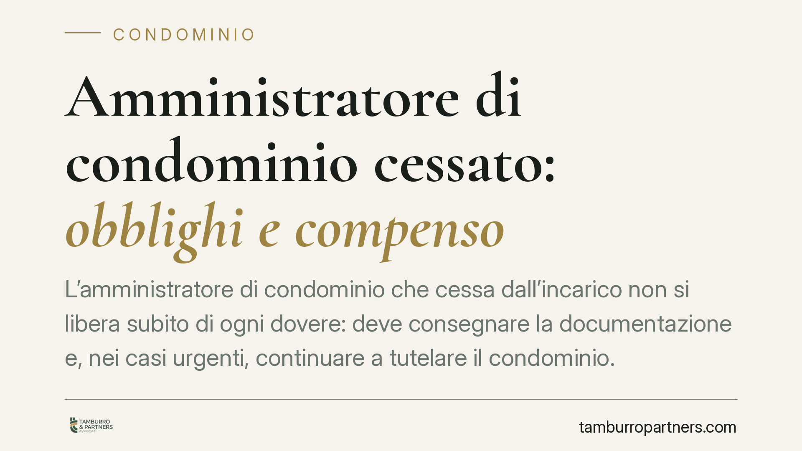

Amministratore di condominio cessato: obblighi e compenso
L'amministratore di condominio che cessa dall'incarico non si libera subito di ogni dovere: deve consegnare la documentazione e, nei casi urgenti, continuare a tutelare il condominio. La giurisprudenza distingue però tra passaggio di consegne fisiologico, gratuito, e gestione prolungata per mancata nomina del successore, che può dare diritto a un compenso. Ecco cosa prevede la legge e come muoversi.

Il fatto e perché conta
Quando l'incarico dell'amministratore di condominio finisce — per dimissioni, revoca o scadenza del mandato — non tutto si chiude dall'oggi al domani. Restano a suo carico alcuni adempimenti, previsti dalla legge a tutela del condominio.
Il punto delicato è capire fin dove arrivano questi doveri e se per le attività svolte dopo la cessazione spetti o meno un compenso. La questione tocca da vicino sia l'amministratore uscente sia l'assemblea, che deve attivarsi per nominare il successore.
Inquadramento normativo
La base è l'art. 1129 del codice civile. Il comma 8 impone all'amministratore cessato di consegnare tutta la documentazione in suo possesso relativa al condominio e ai singoli condòmini, oltre a eseguire le attività urgenti necessarie a evitare pregiudizi agli interessi comuni, senza diritto a ulteriori compensi.
Si tratta di un obbligo strumentale, imposto direttamente dalla legge: serve a garantire la continuità della gestione nel momento di passaggio tra due amministrazioni. Il comma 11 del medesimo articolo, inoltre, conferma che la revoca o le dimissioni non interrompono la necessità di una tempestiva nomina del nuovo amministratore da parte dell'assemblea.
Va fatta una precisazione. Si parla talvolta, in dottrina e in giurisprudenza, di *prorogatio* dei poteri dell'amministratore cessato. È bene chiarire che non si tratta di una categoria testualmente codificata per il condominio: è una costruzione interpretativa elaborata per inquadrare la fase di transizione. La norma, in senso stretto, parla soltanto di consegna dei documenti e di attività urgenti.
Le due situazioni
La distinzione pratica più importante riguarda il compenso.
Primo caso: passaggio di consegne fisiologico. L'assemblea nomina il nuovo amministratore entro tempi ragionevoli. L'amministratore uscente consegna la documentazione e compie, se necessario, gli atti urgenti. Queste attività rientrano nell'obbligo legale e sono gratuite: non legittimano una richiesta di ulteriore pagamento, trattandosi dell'ultimo segmento del mandato già retribuito.
Secondo caso: gestione prolungata. L'assemblea non provvede a nominare il successore e l'amministratore cessato continua, di fatto, a gestire il condominio ben oltre la fase di passaggio. Qui lo scenario cambia. Una gestione protratta nel tempo, che va oltre la consegna e le urgenze, può configurare un'attività ulteriore e come tale remunerabile.
Quest'ultima lettura è coerente con l'orientamento che, già in passato, ha riconosciuto all'amministratore un compenso per la gestione di fatto protratta, quando essa eccede i limiti del semplice completamento del mandato e risponde a un'esigenza concreta del condominio rimasto privo di guida.
Il discrimine, quindi, è funzionale: un conto è chiudere ordinatamente il rapporto, altro è supplire per mesi all'inerzia dell'assemblea.
Implicazioni pratiche
Per l'amministratore uscente: non si può pretendere un compenso per la mera consegna dei documenti e per gli atti urgenti. Ma se la gestione si protrae per l'inerzia dell'assemblea, è opportuno documentare le attività svolte, perché potrebbero fondare una legittima pretesa.
Per il condominio e l'assemblea: trascurare la nomina del nuovo amministratore non è neutro. L'inerzia può generare costi e contenziosi. Convocare tempestivamente l'assemblea è il modo più sicuro per contenere il rischio.
Cosa fare in concreto
- Formalizzate la consegna: redigete un verbale di passaggio con l'elenco analitico della documentazione trasferita (registri, rendiconti, contratti, estratti conto), con data e firme.
- Identificate subito gli atti urgenti: se la cessazione avviene in presenza di scadenze imminenti (pagamenti, adempimenti fiscali, interventi di sicurezza), intervenite solo nei limiti dello stretto necessario.
- Convocate l'assemblea senza ritardo per la nomina del nuovo amministratore: evitare la fase di vuoto gestionale protegge il condominio e definisce il confine dei doveri dell'uscente.
- Tracciate la gestione prolungata: se l'amministratore cessato continua a operare oltre il passaggio per mancata nomina, documentate ogni attività, perché può incidere sul diritto al compenso.
- Verificate i termini contrattuali: controllate che il mandato non contenga clausole specifiche su recesso, preavviso e modalità di consegna.
Consigliamo, nei casi di passaggio conflittuale o di gestione protratta, di far valutare la posizione a un professionista prima di avanzare o contestare richieste economiche.
*Nota: eventuali pronunce di legittimità citate vanno sempre verificate nel testo integrale, numero e data di deposito prima di assumerle a fondamento di una decisione.*
Ogni condominio ha una storia a sé.
Se gestisci un'amministrazione e vuoi un confronto su una specifica questione condominiale, scrivi allo studio. Ti rispondiamo entro un giorno lavorativo.